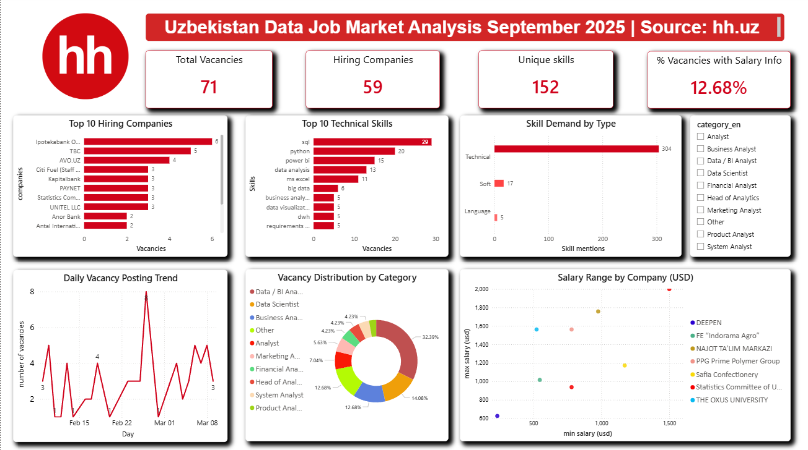
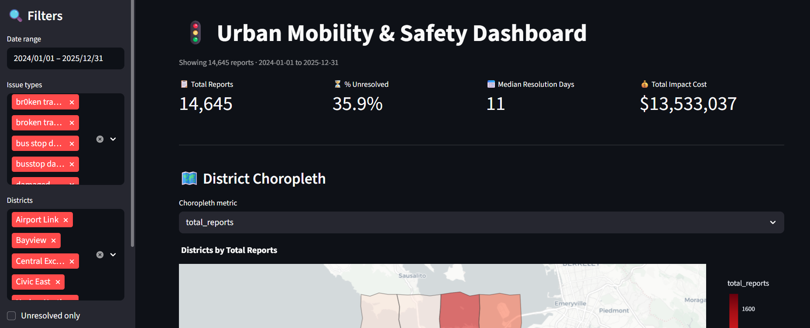
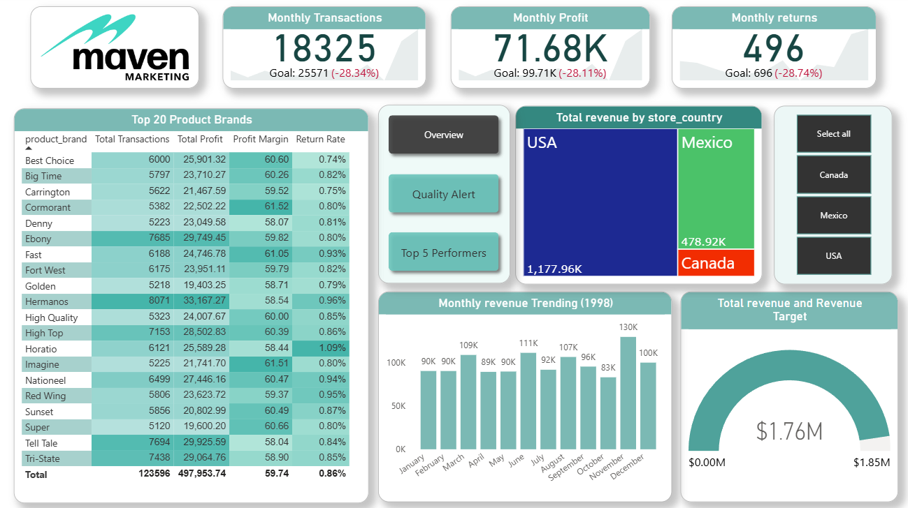

I build ETL pipelines, interactive dashboards, and statistical analyses that answer real business questions. Five portfolio projects — from job market analysis to urban safety reporting — built end-to-end.
I completed a 7-month intensive program in Python, SQL, and Power BI at Najot Ta'lim, and I am currently studying Business Information Systems at Westminster University in Tashkent (expected 2027).
My projects go beyond toy datasets — I built a production ETL pipeline pulling real job market data from hh.uz via API, deployed a live Streamlit app analyzing urban mobility reports, and created a full star-schema BI dashboard across 269,720 retail transactions.
Two years of e-commerce experience at Rizesport.uz gave me real business context: I know what questions managers actually need answered from data.
Five end-to-end projects — every line of code written and understood.

ETL · API · Power BIProduction-grade ETL pipeline collecting Data Analyst job vacancies from hh.uz via REST API. Loads into normalized SQL Server schema (5 tables).

Streamlit · Live AppInteractive Streamlit dashboard analyzing 22,000+ urban safety reports. Full data wrangling pipeline with spatial joins.

Power BI · DAXBusiness intelligence dashboard across 269,720 transactions for a multi-national grocery chain. Star schema across 7 tables.
Statistical analysis of 891 Titanic passengers uncovering survival patterns. Chi-square tests and t-tests validated findings.
Tools and technologies used across real projects — not just listed, actually applied.
I'm actively looking for junior Data Analyst roles. If you have an opportunity or just want to talk data — reach out.
Send an email ↗